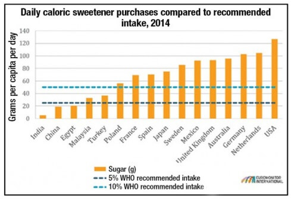

Sugary drinks are a major contributor to the obesity epidemic. Increased consumption of soft drinks is associated with increased energy (calorie) intake. Habitual consumption of sugar sweetened beverages was associated with a greater incidence of type 2 diabetes, independently of adiposity. Regular sugar-sweetened beverage consumption was associated with greater risk of fatty liver disease, particularly in overweight and obese individuals. In Mexico more than 70% of students consumed per day more than 25 g/day of sugar from beverages, and more than 38% consumed more than 50 g/day of sugar.
A total of 1138 students participated in the study. The prevalence of obesity and abdominal obesity was 12 and 33% with 14 and 17% in women and men respectively. Fifty-five per cent of women and 68% of men consumed more than 25g of sugar drinks per day; 12% consumed more than 100g of sugar daily. The daily caloric intake from beverages was greater than 450kcal with 350kcal in men and women respectively. Ten per cent of women and 15% of men consumed more than 30g of alcohol daily. The sugary drinks more frequently consumed were fruit juices (90%), whole milk (69%), regular soft drinks (83%), beer (37%), liquor (27%) and energy drinks (12%) Gómez-Miranda et al., 2014.
The UK government recently announced the introduction of tax exclusively on sugary soft drinks –fruit juices and sugar-laden milk shakes are exempt. The tax will be introduced in 2018. It will target sugar content in product above both 5g and 8g per 100 millilitres and aims to raise £520 million (US$737 million). The justification for the tax is to check the rise in obesity, especially childhood obesity. Mexico appears to be the flag bearer for the tax where obesity among children rose by 40% over the period 1999-2006, and the main culprit was identified as sugar-sweetened beverages. In January 2014 Mexico imposed tax at the rate of one Mexican peso (USc 6) per litre on any beverages with added sugar, including fizzy drinks, energy drinks, bottled tea and coffee, fruit juice and any fruit-flavoured drink. Several other countries have followed suit – some 39 states in USA have taxes on SSBs, as do France Hungary. South Africa will be introducing one next April.
The Caribbean island of Barbados recently announced a new sugar tax, effective August 1, 2015. The 10% tax will apply to all carbonated soft drinks, sports drinks, sweetened fruit juices, and juice drinks. “Beverages containing intrinsic sugars only, such as 100% natural fruit juice, coconut water, plain milk, evaporated milk [which] will not be subject to the excise tax.” In Barbados, 64% of adults are overweight or obese, and 31% of children are, too. The government spends approximately US $113 million (BBD $226 million) per year fighting diabetes and high blood pressure.

In the UK recently, the Chief Executive of National Health Service was reported as proposing a 20% tax on all sugary drinks and foods in NHS cafes to be introduced by 2020.
Consumption of sugar-sweetened drinks has been linked to obesity, type 2 diabetes, and metabolic syndrome-a group of risk factors that raises the risk for heart disease and stroke. As a result, many have turned to artificial sweeteners, which are hundreds of times sweeter than sugar but contain few, if any, calories. However, studies in humans have shown that consumption of artificially sweetened beverages is also associated with obesity, type 2diabetes, and metabolic syndrome as well as cardiovascular disease. As few as one of these drinks per day is enough to significantly increase the risk for health problems.
Studies in mice and rats have shown that consumption of non caloric sweeteners dampens physiological responses to sweet taste, causing the animals to overindulge in calorie-rich, sweet-tasting food and pack on extra pounds.
Sugar is among the top ten traded food commodities in the world. It is estimated that slightly more than 174 million tons will be produced in 2012/2013, and may reach over 208 million tons by 2020/2021. Sugar is produced in over 120 countries and is an important ingredient in a wide array of foods. In spite of many negative things said about sugar (almost all of which have repeatedly been shown to be misleading or untrue by science), both production and consumption have generally increased year over year for decades.